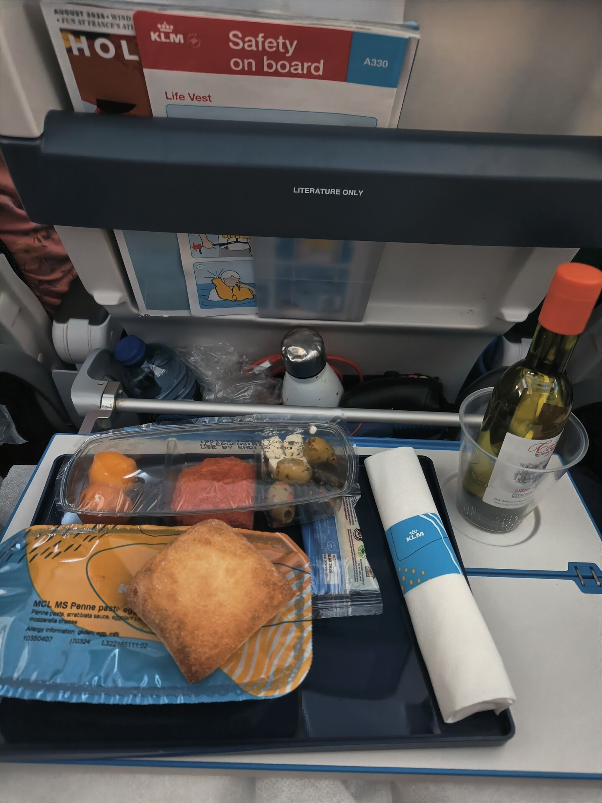

En kort Kanadaweekend

Jag blev utvisad ☠️
Resan började med tuppen 0630 på morgonen när flyget mot Amsterdam lyfte. Vi var framme 8:30 i Amsterdam och hade en 7 timmar mellanlandning innan planet mot Montreal skulle lyfta. Perfekt med tid för att åka in och utforska staden.

Det första som slog mig var att staden var så tyst. Det var gott om folk på gatorna, men fortfarande ett väldigt lugn över hela staden. Efter noggrann undersökning så kom jag på två möjliga anledningar: alla är megabänga, eller totala avsaknaden av bilar. Svårt att avgöra vilken. En promenad runt stadskärnan och en patatje orlog senare så var det dags att röra sig tillbaka till flygplatsen. Vi satt vid vår gate när första ångestvågen började komma. Tänk om jag blir nekad att gå ombord på planet? Vad gör jag då? Skrev jag in rätt passnummer på min ETA?? Det visade sig att det bara var fejk och att det bara stod en biffig man som kollade en pass lite snabbt och sade varsegod du får gå på.
Härlig flygresa ändå. KLM gav vitt vin till maten. Självklart var det ett sydafrikanskt vin från en gård med nederländskt klingande namn. Först fördrev jag tiden med att spela klart Undertale. Kände att det inte var ett spel som riktigt passade sig på ett flygplan, men det tog bara 30 minuter eller så innan jag hade klarat sista bossarna. Efteråt satt jag mest och kollade på filmerna som personen snett framför hade på, och försökte lista ut vad som hände utan något ljud. Jag ger de 20 minutrarna av Bad Guys som jag såg en 10/10.

Väl framme i Montreal så var det först självservicemaskinen där man skrev in vad man ska göra i landet och hur länge man planerar att stanna där. Jag skrev in studier i 300 dagar. Inget jag tänkte supermycket på. Fast borde jag ha skrivit bara typ 120 dagar? Jag ska ju faktiskt till Madeline i USA under julen. Jaja, det gör nog ingen skillnad. Därefter var det dags för tuffa gränspolisen som skulle fråga ut en om exakt samma saker som man precis skrivit in i maskinen.
- Tu as une permis? Non? Alors, vas à immigration 1.
Inte bara blev jag skickad till världens långsammaste immigrationskontor, utan jag blev duad också. Resepartnern som jag åkte med hade skrivit in 150 dagar som studieperiod, och fick inte en enda fråga - han behövde inte ens visa upp sitt antagningsbesked. Fan. Efter ungefär en evighet eller två fick jag äntligen prata med en gränspolis där inne, och förklarade min situation. Jag hade alltså inte mitt studievisum än, men som svensk medborgare borde jag ju få studera i 6 månader, som det står på hemsidan. Och studievisat borde komma vilken dag som helst nu - jag har ju väntat i 10 jävla veckor, och skickade in ansökan så fort jag kunde.
Icke. Att få "studera i 6 månader" utan visum innebar alltså inte att man får vara i landet och plugga valfritt program i 6 månader, utan att ens program måste vara kortare än 6 månader. Såklart. Mitt utbytesår var alltså inte okej, på grund av en teknikalitet. Det gick inte heller att ändra där och då perioden som man skrev in tidigare. Okej så vad händer nu då?
- Alors qu'est-ce que vous allez faire, c'est à retourner à Amsterdam et attendez votre permis d'études, sade mannen med en gullig quebeckisk kling.
Öh va?? Nu vill jag prata engelska. Det här är för allvarligt för silly goofy franskakonversationer.
- So, what you have to do is return to Amsterdam and wait for your study permit, sade mannen med en perfekt amerikansk dialekt.
Öh va??
Mannen var oövertalbar. När jag sedan fick överklaga till chefen så kunde man inte heller försöka övertala honom. Jag fick inte ens ringa några samtal, utan det var bara direkt att skriva under att jag skulle lämna landet imorgon kväll.
- Okaïe, yu ave tu be at ze aèrpört à 14h50. Ozherwaïz zere will be un arrest ouarrante for yu, sade chefen med den bredaste franska dialekten jag någonsin hört.
Vettskrämd skrev jag under och blev sedan utskickad för att få övernatta i Montreal. Jag fick veta att jag behövde ta samma flyg tillbaka, och det fanns inga möjligheter att åka någon annanstans. Så trots att Madeline erbjöd boende i några nätter i alla fall på rätt kontinent medans saker ordnade sig så var det inte en möjlighet. Som tur var fick jag tag på hyresvärden för stället jag skulle bo på först, och förklarade läget. Han var förstående och lät mig sova i rummet gratis över natten. Schysst i alla fall. Någon bra sömn fick jag inte, dels från jetlaggen, dels från megaångesten över sitationen och dels över mejlkonversationerna som haglade mellan föräldrarna och studievägledarna i både uppsala och montreal.
Dag två av min lilla girls trip slay weekend började kl 6 när min kropp absolut inte kunde sova något mer. Jag läste igenom mejlen och vad som hade gjorts i Sverige under natten, klädde på mig och gick till McDonalds. Det kan ha varit bland de äckligaste frukostarna jag någonsin har ätit. McBagel som gjorde en spyfärdig i varje tugga och en överflötig hashbrown. Men men, det var mat i alla fall. Och jag hade inte ätit sedan flygplansmiddagen dagen innan. Precis när jag var klar fick jag ett långt meddelande med instruktioner från pappa, som precis flexat sina franskakunskaper till max över telefon med studievägledarna i Montreal. Jag skulle till den här tågstationen, sedan upp för rulltrappor och genom en korridor och sen lite hit och dit för att äntligen komma fram till studentservicekontoret på skolan. Där skulle jag fråga efter chefen på avdelningen som kunde hjälpa mig vidare.
Väl på skolan gick allt supersmutt, och vi kom på en plan med att jag får ett nytt antagningsbesked för endast en termin, vilket bör innebära att jag får stanna kvar för nu. Sedan får vi lösa termin 2 senare. Detta bekräftades även när de ringde till immigrationskontoret, som sade att det kan fungera men är upp till gränspolisen jag träffar på flygplatsen. De verkar gå lite på vibe. De berättade också att det är många studenter med samma problem som mig, att de inte har fått sitt studievisum än trots att de skickade in ansökan så fort det gick. Det är tydligen ett stort problem för universitet i hela Quebec. Jävla fejkjänkar som tar mer än hela sommaren på sig för att behandla höstens studievisum. Efter massa fina papper med snygga stämplar och dylikt så var jag äntligen redo att åka till flygplatsen för att rädda min resa. Ungefär som när jag vann över bossarna i Undertale. Det här kan ju inte gå annat än bra va?
Jag åt en lunch från skolans kafeteria och tog mig sedan tillbaka till lägenheten för att plocka ihop grejerna och röra sig mot flygplatsen. En uberresa senare var jag framme. Jag möttes upp av en säkerhetsvakt och behövde kämpa mig fram för att ens få prata med en gränspolis och visa upp mina nya dokument. Han tog en titt på dem, ringde ett kort samtal och bestämde sig därefter att skita i dem, eftersom de kommit efter att mitt beslut redan tagits. Det fanns alltså inget att göra. Men däremot får jag komma tillbaka när jag vill och få komma in i landet. Men jag är tvungen att först lämna landet på samma plan som jag flög in med. Jag undrar om den mannen tycker hans jobb är givande och tillfredsställande.
Så nu sitter jag här, i Amsterdams flygplats igen, väntande på ett flyg till Arlanda. 7 timmar mellanlandning igen. Men resan betalades i alla fall av flygbolaget, och jag kommer ända hem till Sverige. Summan av kardemumman: Kanada nummer ett opp och länge leve det fria Quebec.